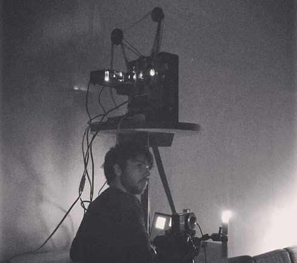

MATTHIEU HALLÉ
performance + installation
THE WATERFALL (2017)
LOVE, DEAR LOVE (2016)
SYNESTHESIA (2014)
video / films
TRAVEL SKETCHES (2017)
IMITATION / MOVING GAZE (2015)
APARTMENT NO. 1 - 4 (2014-2016)
MARGRAUE (2013)
...AND TIME (2013-2014)
bio
cv
contact
artist / filmmaker
THE WATERFALL (2017)

The Waterfall is an improvised audio/visual performance consisting of a looping 16mm film projection with a digital projector light source projecting a live camera feed of candles focused with hand-held pieces of glass.
It premiered March 11, 2017 at House of Common, in Ottawa, ON with Linsey Wellman on alto saxophone and Gary Franks on modular synthesizer.
Matthieu gratefully acknowledges the financial support of the City of Ottawa for this project.